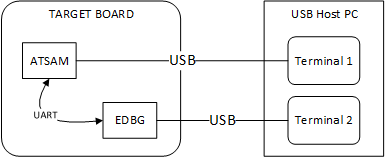

This application demonstrates the use of the CDC Device class in implementing a USB-to-Serial Converter. The application enumerates a COM port on the USB Host PC. Data received through the CDC USB interface is forwarded to a UART. Data received on the UART is forwarded to the CDC USB interface. This emulates a USB-to-Serial Converter.
- Open_the project in MPLAB X IDE and select the desired configuration.
- Build the code and program the device.
- Attach the device to the host. If the host is a personal computer and this is the first time you have plugged this device into the computer you may be prompted for a .inf file.

4. Select the "Install from a list or specific location (Advanced)" option. Specify the <install-dir>/usb/apps/device/cdc_serial_emulator/inf directory.

The LEDs on the demonstration board will indicate the USB state of the device. Refer to the Configuring the Hardware section for the selected target hardware.
5. Open_a terminal emulation program of your choice and select the enumerated USB COM port. Set the desired serial baud and other connection related parameters. This is terminal 1.
6. Connect the CDC USB port to the Host PC and ensure that a second COM port is available on the Host PC. Refer to the Configuring the Hardware section for details for the selected hardware. Open a serial terminal program and select the second COM port. The serial settings of this COM port should match the setting made in step 5. This is terminal 2. The setup should resemble the below figure.

7. Text entered into the terminal 1 program will be echoed on terminal 2. Text entered in terminal 2 should be echoed in terminal 1.
|
MPLAB Harmony USB Stack
|